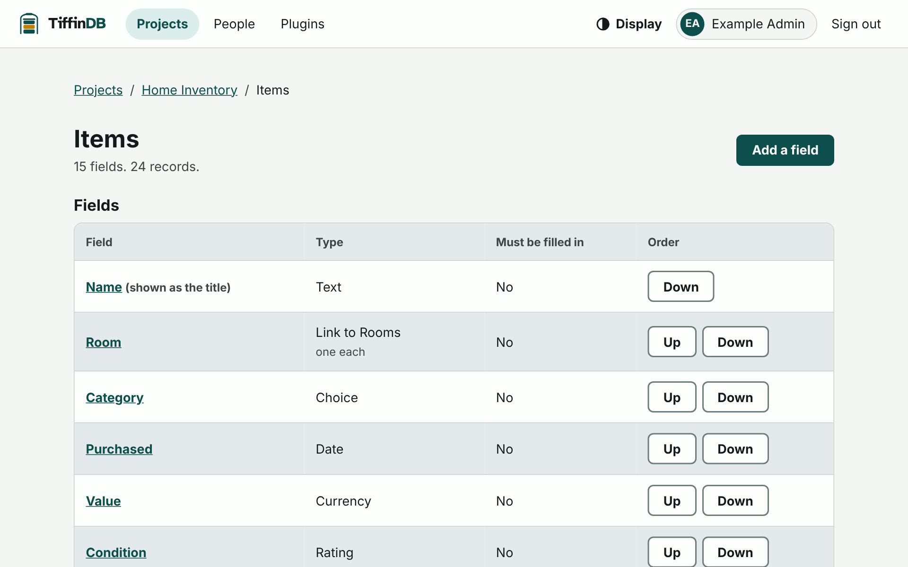

Developer handoff and roadmap
Pick up TiffinDB where the build stopped
What exists, how it fits together, the rules that hold it in shape, how it was built, and what comes next. Written for a developer who has never seen the project.
Part 1Start here
TiffinDB is a self-hosted personal database web application: PHP 8.3 or later, no framework, server-rendered HTML, one SQLite file per project, AGPL-3.0-or-later. Five of the eight version-1 milestones are closed.
State as of main at a8ca17b, 2026-11-23. This page describes the code and the ledger on main at that commit (the merge of pull request 8), which this documentation is built on. A later integration branch exists on which M5 has closed and M7 work has started; it is not merged to main, and the ledger on that branch is the authority for its state. When this page and the ledger disagree, the ledger wins (docs/build/ledger.md, section 1).
M0 to M4 closed
Scaffolding, foundation, records, import and export, links, files, and saved collections. Each closed after an independent exit audit; the last on 2026-11-22. All of it is on
main(merged through pull request 8).M5: form editor and sanitizer
Not started. It starts only on a new instruction from the maintainer. It is the next security-heavy design: stored form HTML must pass an allowlist sanitizer.
Two deferred tasks
The legacy-format discovery run (
tools/discovery/), which gates M6, and the reference shared-host check (tools/host-check/), which gates the M7 exit. Both scripts are written and reviewed.
Also on this baseline: this documentation set (ADR 0020, provisional). Its state, the application observations made while writing it, and how to regenerate its screenshots are in docs/build/documentation-handoff.md. ADR 0020 decision 6 requires a change to a screen, a setup step, or the milestone state to update the page that describes it.
First-day checklist
- Read
CLAUDE.md. Its "Public Repository Rules" and "Licensing" sections are mandatory: this repository is public and permanent, and only synthetic data may appear in it. - Read the ledger, sections 1 (current state) and 5 (blockers and deferred maintainer tasks).
- Read ADR 0008 (code layout and conventions) and ADR 0012 (core operations, authorization, snapshots, audit log). They explain most of the code.
- Check the PHP on your machine: 8.3 or later with
pdo_sqlite(SQLite 3.35.5 or later),zipandxmlreader;dom,filterandlibxmlare needed for XLSX (the setup page only warns without them). The Install Guide lists every check of the setup page. - Install and run the checks, then start the development server (commands below). Give it a data folder of its own first.
- To regenerate the demo data or the screenshots of this manual (
tools/docs/) you also need Node.js and Playwright. They are documentation tools, not project dependencies. - Read the as-built notes at the end of the M4 specifications (
docs/specs/M4-core.mdsection 17,docs/specs/M4-screens.mdsection 13). Where a specification and its as-built notes disagree, the notes describe the code. - Before you implement anything that settles an open point, record the decision as an ADR in
docs/decisions/(CLAUDE.mdrequires this).
composer install # development install, with PHPUnit
composer check # lint (php -l on every PHP file), then the full suite
composer serve # PHP built-in server on http://127.0.0.1:8080Without configuration the application looks for its data folder at ../tiffindb-data, next to the checkout, and then at data/ inside it (src/Core/Storage/DataDirectory.php). To keep a development instance separate, create the git-ignored file config/local.php first:
<?php return ['data_dir' => '/absolute/path/to/a/scratch/data/folder'];Then open the server address. The setup page asks for a setup code that the installer writes to setup-code.txt in the data folder, then for the first Admin. The Install Guide covers this in detail.
Note
Run on 2026-11-23 in the main checkout: php tools/dev/lint.php checked 786 PHP files, 0 failed; vendor/bin/phpunit tests/repo passed 3,265 tests. The full suite was not re-run for this page. The baseline figure is the ledger's: 9,498 tests, 1 skipped, at M4 close. The install-guide writer of the documentation work ran composer test on this baseline on 2026-11-23 and reports 9,503 tests OK, 1 skipped, with the documentation files present. The counts differ because the repository-rule tests walk the file tree: each added file adds test cases to tests/repo.
Part 2Orientation
Goals, in priority order
From docs/plan.md section 1. When two goals pull against each other, the higher one wins.
- Ease of use for non-technical users.
- Legibility and visual accessibility (WCAG 2.2 AA throughout, 7:1 text contrast in the default theme).
- Data ownership and portability: open, documented formats, exportable without the application.
- Simple installation and upkeep on ordinary shared hosting.
- Extensibility through plugins (import, export, and later field types).
Users
A household or a small group. One more technical person installs TiffinDB and is its first Admin. Admins design projects, manage people, share projects, import, export, and turn plugins on and off. A Member sees only the projects shared with them and can view, add, change, trash, and restore records there (ADR 0002, ADR 0011). TiffinDB started as a free replacement for a discontinued desktop database product; the model UI in docs/design/model-ui/ is the visual target for version 1 (ADR 0007).

tools/docs/seed-demo.js creates it. Every screen is server-rendered HTML; it works without JavaScript.Hard constraints
These are fixed by CLAUDE.md and ADRs 0001 and 0008. Changing any of them is a maintainer decision, not an implementation choice.
- PHP 8.3 or later, no framework, Apache with
.htaccessandmod_rewrite, server-rendered HTML, vanilla JavaScript, no build step. Every screen works without JavaScript. - Storage is SQLite only: one file per project plus one system database. No MySQL or MariaDB.
- No inline scripts or styles, no third-party assets from the network, no telemetry and no outbound network calls.
- AGPL-3.0-or-later. Every source file carries the SPDX header. Dependencies must have AGPL-compatible licences, confirmed from their own licence file and recorded in
docs/dependencies.md. - Public repository: no personal data, names of real people, credentials, employer references, or material from the discontinued product.
- The core is headless: every operation is callable without the web layer, and authorization lives in the core. This exists for the post-v1 MCP server (ADR 0005).
import-continue.js, settings-preview.js and show-password.js in public/assets/js/.Part 3Architecture
Two PHP namespaces under src/: TiffinDB\Core (headless rules and storage) and TiffinDB\Web (HTTP, controllers, view). Plugins live outside src/ in plugins/ under their own namespace, TiffinDB\Plugin\<Kind>\<Id>. Core returns data and message keys with parameters, never English sentences, so the web layer and a later MCP adapter can each present them.
Layers and allowed dependencies
The core is split into ten areas. Each area may name only the areas on its list; a repository test reads every PHP file with token_get_all and fails on any other TiffinDB\Core\<Area> name. The lists below are copied from CoreLayerRulesTest::ALLOWED, which is the authority (ADR 0012 decision 1 as amended by ADRs 0014 and 0015).
LayerRulesTest (core never names Web or Mcp, reads no superglobals), CoreLayerRulesTest (the lists above, plus no direct clock or random calls outside SystemClock and SecureRandom), WebLayerRulesTest (web side: App, Install, Error, plus the Auth, Schema and Storage value types it lists) and PluginLayerRulesTest (plugin side: the contract, five Io\Csv classes, OpenSpout\).Three details matter when you add code:
- Only
src/Web/CoreServices.phpbuilds core objects. It is the web layer's composition root and may name any core class. Every other web file and every template may nameCore\App,Core\Install,Core\Error, and the value types listed inWebLayerRulesTest: eleven fromCore\Auth(for exampleActor,Role,Permission), four fromCore\Schema(TableDef,FieldDef,RelationDef,Cardinality) andCore\Storage\SnapshotInfo. The kernel reaches the core only through theServicesinterface. - Authorization is in
Core\App, not in controllers. Every operation takes anActorfirst and starts with its permission check (Core\Auth\Authorizer). A Member who is not granted a project getsNotFound, the same answer as for a project that does not exist. - Plugins see a small surface. They may name
TiffinDB\Core\Io\Contract\, five pure CSV classes inCore\Io\Csv, their own namespace, PHP's standard library, andOpenSpout\. They may not open databases, call the network, read request state, or execute code dynamically. Only the shipped plugins are checked by the test; a plugin still runs with full PHP privileges (ADR 0015 decision 3).
Life of a request
public/index.php is the only PHP entry point. It loads Response, SecurityHeaders and Fallback before the autoloader, so that even a missing vendor/ or a fatal error answers with the full security header set. The order of checks below is the order in the doc comment of src/Web/Kernel.php.
Three conventions in this path:
- Routes are one static table,
src/Web/routes.php:[method, pattern, [Controller, 'method'], access], first match wins, placeholders match one segment of[A-Za-z0-9_-]+. On 2026-11-23 it held 96 routes served by 21 controllers. - Templates are plain PHP under
templates/. Every<?=must be exactly one call to a scope helper such as$this->e(),$this->t()or$this->url(). Output is XML-well-formed HTML5 so that tests can parse it with PHP's XML parser. No English prose in templates: text comes fromstrings/en/*.phpthrought(). - Every state change is a POST with a CSRF token; GET never changes state; identifiers in URLs are opaque 12-character keys, never user text.
Data model
One data folder holds everything that belongs to an installation. The system database knows about people and projects; each project is a folder with its own SQLite file that never contains an account. Table names below are from src/Core/System/SystemSchema.php and docs/formats/tiffin.md (project format version 4).
t_, f_, j_, x_ prefixes); display names live in the metadata tables and can change freely. Forms and collections belong to a table through their table_key column.Format upgrades are forward-only: FormatMigrations takes a format-upgrade snapshot, then runs each step in its own transaction (versions 1 to 4 were written by M1 to M4). The system database follows the same pattern in SystemSchema. A project travels as a project archive (a zip with a manifest, docs/formats/tiffin.md section 13) and exports to JSON as described in docs/formats/json-export.md.
Import pipeline
Shared hosts limit how long a request may run, and the import promise is "all together, or not at all". ADR 0015 resolves both: an import is a staging job outside the project file, worked through in short requests, and only the last request writes to the project, in one transaction.
src/Core/Io/Contract/); the core owns every write. Without JavaScript each chunk is a page with a Continue button; import-continue.js presses it automatically. Limits are constants in src/Core/Io/IoLimits.php; the 64 MiB figure is lowered to PHP's own upload limits when those are smaller.Export runs the other way through ExportSourceBuilder and an exporter plugin (CSV, XLSX, JSON). The CSV reader and writer are core classes (Core\Io\Csv), so the portability minimum never depends on plugin loading or on the XLSX library. The XLSX importer reads with PHP's XMLReader; OpenSpout 5.2.2 is used only by the XLSX exporter (ADR 0016, M3 as-built notes).
Security essentials
| Concern | As built | Where |
|---|---|---|
| Headers and CSP | default-src 'none' plus same-origin styles, scripts, images, fonts, connections and form targets; frame-ancestors 'none'; nosniff, X-Frame-Options: DENY, Cache-Control: no-store and others, on every response including errors | src/Web/SecurityHeaders.php |
| Passwords and sessions | Argon2id (bcrypt where Argon2id is missing); only session-token hashes stored; cookie tdb_session; sign-in throttled per user and per address | src/Core/Auth/ |
| CSRF | Token on every POST, Sec-Fetch-Site and Origin checks first; anonymous token cookie tdb_csrf on setup and guest routes | src/Web/Kernel.php, Core\Auth\Csrf |
| SQL | Prepared statements only; SQL text built from literals and Identifier names, never user text | src/Core/Schema/Identifier.php, SqlStringsTest |
| Attachments | Type from the file's first bytes; served only through an access-checked route with default-src 'none'; frame-ancestors 'none'; sandbox; inline only for four image types | ADR 0018, FileController |
| Data folder exposure | Setup probes over HTTP, with a positive control, and refuses to finish if the data folder is readable or the result is inconclusive | src/Core/Install/ExposureProbe.php |
| Stored forms | Never printed: parsed into a node model and rebuilt through ordinary templates until the M5 sanitizer exists | ADR 0014 decision 4, Core\Forms\FormParser |
| Plugins | Full PHP privileges; listing never executes plugin code; non-shipped plugins are off by default and need an Admin's confirmation | ADR 0015, src/Core/Io/Plugin/ |
Part 4Code map
Counts made with find on 2026-11-23 (PHP files unless stated). Only public/ is web-reachable; the root .htaccess forwards everything into it for hosts that put the whole tree under the document root.

TableController and FieldController in the web layer, Core\App\SchemaOperations, then Core\Schema\SchemaEditor, which changes the SQLite table and regenerates the table's form in the same transaction.Where do I change X
| To change | Go to | Also update |
|---|---|---|
| A URL or add a screen | src/Web/routes.php, a controller in src/Web/Controller/, a template in templates/pages/ | The milestone spec's route list; a web test in tests/web/ |
| Text on a screen | strings/en/<area>.php (keys only in templates) | StringsTest fails on a missing key |
| Page markup shared by many screens | templates/layout.php, templates/partials/ | Keep every <?= a single helper call |
| Styles | public/assets/css/app.css; colours only through tokens | public/assets/css/tokens.css must keep every colour of docs/design/tokens.css; lengths are converted from px to rem by the rules of M0 spec section 8.1 (TokenParityTest) |
| Appearance classes (theme, accent, typeface, size) | src/Web/Appearance.php | The allowed values in Users::SETTINGS (src/Core/Auth/Users.php), repeated in src/Web/Controller/SettingsController.php |
| A business rule or a new operation | src/Core/App/*Operations.php, reached through Operations | Permission check first; an audit action if it changes something |
| Who may do what | src/Core/Auth/Permission.php, Authorizer.php | ADR 0002, ADR 0012; refusal tests in tests/core/app/ |
| A field type | src/Core/Schema/Type/ and FieldTypes.php | docs/formats/tiffin.md section 6; conversion matrix in the M1 spec |
| The project file format | src/Core/Schema/FormatMigrations.php (a new forward-only step) | docs/formats/tiffin.md first; an ADR; tests/formats/ |
| The system database | src/Core/System/SystemSchema.php (STEPS, VERSION) | The milestone spec's DDL section |
| Record listing, search, filters | src/Core/Query/Records.php, ListQuery.php, Sql.php | ADR 0013; SqlStringsTest scans the SQL of Schema, Query, Forms and Io; Sql.php is exempt by name and reviewed instead |
| An import or export format | A new folder plugins/<kind>/<id>/ with plugin.json and src/ | PluginLayerRulesTest; licence in docs/dependencies.md if it ships a library |
| Import limits | src/Core/Io/IoLimits.php | M3 spec section 6.8 |
| Security headers or CSP | src/Web/SecurityHeaders.php only | SecurityHeadersTest pins the exact set |
| Install requirements and setup | src/Core/Install/, SetupController | The Install Guide's requirement list |
| Configuration keys | config/app.php; local keys in Kernel::withLocalConfig() | The Install Guide's configuration reference |
| A dependency | composer.json (exact pin) | docs/dependencies.md in the same change (DependencyLicenceTest) |
Part 5Working rules
Most rules are enforced by a test that fails the suite. Where only review enforces a rule, the table says so. Every test named here exists in the repository (checked 2026-11-23).
| Rule | Reason | What enforces it |
|---|---|---|
| SPDX header on every file, of the right syntax for its type; unknown file types fail | AGPL attribution in every copy | tests/repo/SpdxHeaderTest.php (closed-world, with an exemption register) |
declare(strict_types=1) first in every PHP file; every file passes php -l | Type errors surface early | tests/repo/PhpSourceRulesTest.php, tools/dev/lint.php |
| Core never names Web or Mcp, never reads superglobals | Headless core for the later MCP adapter | tests/repo/LayerRulesTest.php |
| Core areas use only their listed areas; no direct clock or random calls | Clear layering; deterministic tests | tests/repo/CoreLayerRulesTest.php |
| Web names only App, Install, Error and listed value types | Authorization cannot be bypassed from a controller | tests/web/WebLayerRulesTest.php |
| Plugins: only the contract, no database, network, or dynamic code | Small, reviewable plugin surface | tests/repo/PluginLayerRulesTest.php |
The test seams of Installer and Operations are never used outside tests | Test hooks cannot reach a live request | tests/repo/CompositionSeamTest.php |
| Every template output is one escaping helper call; no inline script or style | No cross-site scripting; strict CSP | tests/web/TemplateRulesTest.php; HtmlAssertions::assertNoInlineCode on rendered pages |
SQL built only from literals and Identifier names | No SQL injection through table or field names | tests/core/schema/SqlStringsTest.php, for src/Core/Schema, Query, Forms and Io only; src/Core/Query/Sql.php is exempt by name. Elsewhere: review |
No error-suppression operator @ | Errors are handled, not hidden | tests/repo/NoErrorSuppressionTest.php |
| Exact security header set and CSP | One place, applied once | tests/web/SecurityHeadersTest.php |
| Dependencies AGPL-compatible, pinned exactly, recorded with version and commit | Licence compliance; reproducible release | tests/repo/DependencyLicenceTest.php, tests/repo/ComposerManifestTest.php |
Mandatory .gitignore entries (databases, archives, .env*, config/local.php) | Real data and secrets never reach git | tests/repo/GitignoreTest.php |
The two .htaccess files and the data folder's deny rule as specified | Nothing outside public/ served | tests/repo/HtaccessTest.php (static; Apache behaviour unverified) |
| ADRs numbered without gaps, each with an accepted status | Decisions recorded before code | tests/repo/DecisionRecordsTest.php |
| Token colours equal the design file, lengths converted px to rem by fixed rules; contrast figures as published | Accessibility target of 7:1 | tests/design/TokenParityTest.php, tests/design/ContrastTest.php |
| No outbound network calls in the application | Privacy; no telemetry | Plugins: PluginLayerRulesTest. Core and web: review and the exit audits (an strace run at M3). The installer's loopback probe is the one socket use |
| Only synthetic data; no names, emails, credentials, employer references | Public, permanent repository | Review and the exit audits only; no automated scan |
| A decision is recorded as an ADR before it is implemented | Reversible, traceable design | Review; DecisionRecordsTest checks only the format |
Part 6How the build has been run
M0 to M4 were built by automated agents under the procedure in docs/build/orchestration.md. One orchestrating agent delegates design, coding and review to separate agents, integrates, and keeps the ledger. It writes no application code itself. Agents work at three tiers: design (specifications, ADRs, security review, exit audits), implementation (work packages, tests, ordinary review) and mechanical (fully specified repetitive work, always reviewed by a higher tier). Nothing in the procedure depends on agents: a human team can follow the same steps.
What the build produced, in numbers
- 9 specification files (
docs/specs/), each ending in as-built notes written by the exit auditor. - 53 planned work packages across M0 to M4 (7, 13, 10, 12, 11), plus follow-up packages named with a letter suffix (for example M3-WP2c). The ledger's work-package table lists M0 and M1 only; M2 to M4 are recorded in their specifications and the usage log.
- 20 ADRs. ADRs 0001 to 0007 were accepted by the lead developer; 0008 to 0020 are accepted provisionally and await confirmation.
- 143 provisional-decision rows in ledger section 4, numbered up to P188 (rows counted on 2026-11-23). Each records a choice made without the maintainer, picked to be cheap to reverse.
- Security reviews and the M4 exit audit report are committed under
docs/build/reviews/. Earlier evidence stayed in session scratch space and is summarised in the ledger.
Tip
Section 9 of the orchestration guide records environment quirks of the build machine: Composer could not download distribution archives there and fell back to multi-gigabyte git clones, and Apache was never installed. Neither applies to an ordinary development machine.
Part 7Tests and quality gates
One PHPUnit suite, offline and deterministic: no network, injected clock and randomness (tests/Support/FixedClock.php, SeededRandom.php), writes only to per-test temporary folders, synthetic data only. Web tests call the kernel in process; no server is started.
| Folder | Test files | What it covers |
|---|---|---|
tests/core/ | 138 | Each core area (app, auth, forms, install, io, query, schema, storage, system, types) |
tests/web/ | 44 | Kernel, router, screens, hostile requests, keyboard structure, template rules |
tests/repo/ | 13 | Repository rules (Part 5) |
tests/plugins/ | 10 | CSV, XLSX and JSON plugins |
tests/roundtrip/ | 8 | CSV, XLSX, JSON, archive and attachment round trips; failed import leaves the project unchanged |
tests/design/ | 4 | Tokens, contrast, fonts, stylesheet rules |
tests/tools/ | 3 | Discovery tool, host check, password reset script |
tests/formats/ | 1 | JSON export against docs/formats/json-export.md |
Files named *Test.php, counted on 2026-11-23; 221 in all. Data providers multiply them into thousands of test cases.
docs/build/ledger.md; each run passed with at most one skipped test. The one skip is a locale test that needs a comma-decimal locale the build machine did not have.Gates
- Before every commit:
composer testandcomposer lint(CLAUDE.md).composer checkruns both. - CI:
.github/workflows/ci.ymlon every push and pull request: PHP 8.3 or later,composer validate --strict(with one expected warning for the exact OpenSpout pin),composer install, lint, tests. Read-only permissions; the checkout action is the only third-party action. - Exit audits re-run each milestone's criteria by hand, run mutations to prove tests are not vacuous (M4: 23 of 23 security mutations killed), and render the screens at 1360 px in four themes, at 390 px (light only at M1; in four themes at M4) and at 320 px with the largest text size.
Caution
Never verified in any milestone: .htaccess behaviour on a real Apache server, the reference shared host's limits, a manual screen-reader pass, and browsers other than Chromium. Treat these as open, not as passed.
Part 8Status of M0 to M4
Each milestone closed after an independent design-tier exit audit with no blocking findings. The full criterion tables and evidence are in ledger sections "M0 exit results" to "M4 exit results".
| Milestone | Closed | Built | Exit criteria (plan section 8) | Notes at close |
|---|---|---|---|---|
| M0 Scaffolding | 2026-11-11 | Request pipeline, shell in four themes, tokens, fonts, repository rule tests, CI, maintainer tools | ADRs accepted; empty app serves a page. The legacy-format findings file: deferred | 1,075 tests |
| M1 Foundation | 2026-11-17 | Storage, system database, accounts, sessions, schema engine, 17 field types, trash, snapshots, audit log, installer, sign-in, people, sharing, schema editor screens | Headless core tests; Admin can create a project and a table | Two review fixes merged at close; one CI-only fix after |
| M2 Records | 2026-11-19 | List view, search, sort, filter, record form, appearance settings | A Member can add, find, and edit records by keyboard only; contrast tests pass | Light warning token raised to 7.61:1 |
| M3 Import and export | 2026-11-19 | Plugin framework, CSV and XLSX import, CSV, XLSX and JSON export, project archive | Round trips on seeded synthetic fixtures | 71-file hostile corpus refused cleanly; @ found and removed |
| M4 Links, files, collections | 2026-11-22 | Relation editing with a picker, attachments, saved collections, trash screen | Linked records editable from a form; attachment access control tested | One flaky test and one scanner gap fixed at close |
Carried open items
Low-severity items that did not block a close are in ledger section 7 and in the "Open low items" paragraphs under each exit result. Examples: "Check again" on the import review loses a table name typed before switching targets; a CSV over 200 columns gets a generic "cannot read yet" message instead of the column-limit message; a large XLSX skip-ahead can exceed the 5-second chunk budget (measured at about 5.8 s); no static test pins the class-name pattern in settings-preview.js.
Part 9Roadmap M5 to M9
Version 1 is M0 to M7. M8 and M9 come after version 1 and each needs an explicit maintainer instruction. No dates are planned. This part describes the main baseline (a8ca17b), where M5 is next. A later integration branch, not merged to main, already has M5 closed (2026-11-23) and M7 work started; read the ledger on that branch for its state.
main at a8ca17b, from its ledger section 1. On a later integration branch, not yet merged, M5 has closed and M7 has started. The proposed order of M8 before M9 is an ADR 0006 default that awaits confirmation.-
M5: Form editor and source editing with sanitizer Next
Exit criteria: editor output equals hand-editable HTML; the sanitizer test corpus passes (plan section 8); editor output renders correctly under every appearance setting (ui-design-plan section 11).
Prerequisites: a maintainer instruction to continue. The sanitizer, the form CSS check, and the "safe HTML" view helper that ADR 0008 decision 4 deliberately left out are security-critical and need design-tier review.
Open questions: whether images in forms keep attachments alive (ledger next action); links in forms (ADR 0009 row E2, left open by ADR 0014); how form CSS is served and checked (ADR 0014 decision 1).
-
M6: Legacy import plugin Deferred
Exit criteria: a synthetic fixture with the legacy structure imports with relations and attachments; the import report is complete.
Prerequisites: the maintainer runs
tools/discovery/discover-structure.phpon legitimately owned files outside the repository and reviews its structure-only output; findings go into a format document underdocs/formats/. Clean-room only: no proprietary code, schemas or assets; real files never enter the repository.Open questions: the plugin's directory, id and UI label (ADR 0009 row D5; the product's name may not appear in the UI or package metadata).
-
M7: Packaging, upgrade path, host and user documentation, release 1.0 Not started
Exit criterion: the release archive installs on the reference shared host by upload and the setup page only; recorded as pending maintainer verification (ADR 0009 row D4).
Assigned work: snapshot restore, project deletion, an audit-log screen and the About page (P170); lone-Admin recovery without a shell (P49); favicon and app icon; a visual pass of every screen in every theme; the release build check that shipped packages match
docs/dependencies.md(ADR 0008 decision 12, ADR 0016); a CSP for static assets served by Apache; repeated failed format upgrades pushing out older snapshots (P183); overlong attachment names losing their extension (P187); review and completion of this documentation set; a final whole-codebase audit (orchestration section 10).Open questions: whether to commit
composer.lockunder a named-file exemption (P8); whether the application links to this manual (ADR 0020). -
M8: WYSIWYG form editor (post-v1) Gated
Exit criteria: forms round-trip between simple editor, WYSIWYG editor and source view without loss; accessibility checks pass on editor output.
Prerequisites: maintainer instruction; confirmation of the ADR 0006 defaults (text elements, token-based styling, one reflowing layout, sequencing). The form format already carries grid placement, static elements and a format version, so no second format is needed.
-
M9: MCP server (post-v1) Gated
Exit criteria: OAuth and MCP design documents reviewed; conformance and abuse-case tests pass; disabled by default.
Prerequisites: maintainer instruction; an OAuth 2.1 design document and its review before any code (ADR 0005). The core already meets the ADR 0005 constraints: every operation is callable without the web layer, and trash, snapshots and the audit log exist.
Open questions: client registration without outbound fetches (plan question 4);
Authorizationheader pass-through on shared hosts.
Part 10Open decisions and maintainer tasks
Tasks only the maintainer can do
| Task | Script and procedure | Unblocks |
|---|---|---|
| Legacy-format discovery run on legitimately owned files | tools/discovery/discover-structure.php, tools/discovery/README.md | M6; the deferred M0 criterion |
Reference shared-host check (PHP extensions, data folder outside the web root, Authorization header, upload and time limits, direct access to attachments/) | tools/host-check/host-check.php, tools/host-check/README.md | The M7 exit criterion; every "not verified on Apache" statement |
| Instruction to start M5 | Orchestration section 7 commands | All further development |
| Confirm or change provisional decisions | ADRs 0008 to 0020; ledger section 4 | Removing the "provisional" status |
Provisional decisions worth reading first
Every ADR from 0008 to 0020 and every row of ledger section 4 is provisional. These are the ones with the widest effect or an explicit question to the maintainer:
- ADR 0008, URL shapes and the
Core/Webnamespace split: the two choices the ADR itself calls costly to reverse. - P8, no
composer.lock: lock files embed package authors' names and emails; a named-file exemption is recommended. - P10, the "Source code" link target: uses the repository URL from the committed mock-up.
- P14, commit trailers: commits carry session-supplied attribution trailers that two reviewers flagged against the rule on email addresses in commit messages.
- ADR 0009 rows A1 to A5: differences between the model UI and the plan (form columns on wide screens, mark colour, breadcrumb on record screens, warning contrast, sign-out placement).
- ADR 0015 and ADR 0010: the plugin manifest and contract and the project file format become costly to change once third-party plugins or many user files exist.
- ADR 0020: whether this documentation set is published, and whether the application links to it.
Out of scope for version 1, provisionally (P5): non-Apache hosting and desktop packaging.
Part 11Risks, known gaps, and stale documents
Risks
| Risk | State |
|---|---|
| Apache and shared-host behaviour differs from what the code assumes | Not tested anywhere. .htaccess files are checked statically; the host check is pending |
| Data folder reachable over the web on some hosts | Mitigated by the installer's HTTP probe with a positive control; direct access to attachments/ not confirmed on a real host |
| Large imports exceed host time limits | Chunked reading and preparing; the final 50,000-row commit was not measured on a shared host |
| Stored form HTML (stored cross-site scripting) once M5 allows editing | Forms are parsed and rebuilt, never printed; the allowlist sanitizer is M5 work |
| Plugins run with full PHP privileges | By design (ADR 0015); only Admins enable them, with a warning for non-shipped ones |
| SQLite write contention | WAL mode, busy timeout, short transactions; Busy gives 503 with Retry-After; household scale assumed |
| Legacy file structure unknown | M6 isolated as a plugin and deferred until discovery |
| Many unconfirmed provisional decisions | Each chosen to be cheap to reverse; ADR 0008 names the two that are not |
Known gaps
- No manual screen-reader pass in any milestone; Chromium is the only browser tested.
- No snapshot restore, project deletion, or audit-log screen yet (assigned to M7). Snapshots can be restored by hand (
docs/formats/tiffin.mdsection 10). - A lone Admin who forgets their password needs shell access (
php tools/admin/reset-password.php <username>). - No automated scan for personal data in the repository; it relies on review.
- No release archive and no tested upgrade path.
Stale documents
Documents whose text no longer matches the build. Checked on 2026-11-23. The ledger and the code win over each of them.
| Document | What is out of date |
|---|---|
docs/plan.md | Header still reads "draft 5, planning phase. No application code exists yet." Section 3.1 lists the original layer names, not the ten core areas; section 3.2 proposes plugins/import/ with a legacy-product folder and a data/ folder (the default is now ../tiffindb-data); section 3.3 omits _tiffin_attachment_links; section 9 lists dependencies as "not yet added" |
CLAUDE.md on main | The status paragraph at a8ca17b says M0 and M1 are complete; the documentation branch corrects it to M0 to M4 complete, M5 next |
docs/build/context-brief.md | States "no application code exists"; a pre-build condensation kept for history |
docs/build/M2-M3-session-plan.md, docs/build/M4-session-plan.md | Status lines still read "proposed, awaiting the maintainer's go-ahead"; both plans were carried out |
docs/build/orchestration.md section 1 | Says "M0 and M1 are closed"; M0 to M4 are closed |
| ADR 0008 decision 5 | Describes one flat strings/en.php; as built it merges strings/en/*.php (recorded as P40 and in the M1 screens spec, not in the ADR) |
Part 12Reference
Glossary
- Project
- A folder in the data folder with one SQLite file, its attachments and snapshots.
- Table, field, record
- A user table is a real SQLite table
t_<key>; a field is a columnf_<key>; a record is a row. - Relation
- A link between two tables, shown as a relation field on both sides and stored in a join table
j_<key>. - Saved collection
- A named set of filter rules and a sort on one table (ADR 0019).
- Key
- A random 12-character identifier from
a-zand2-7; never changes, never reused, used in URLs and SQL names. - Trash
- Records with
_trashed_atset; restored by anyone with access, emptied only by an Admin. - Snapshot
- A complete copy of
project.tiffintaken before a risky change; the 20 newest automatic ones are kept. - Audit log
- Table
audit_login the system database: who did what, when. - Staging job
- An import in progress, in
staging/imports/<job>/with its ownjob.sqlite. - Plugin
- A folder
plugins/<kind>/<id>/withplugin.jsonand PHP classes implementing the import or export contract. - Actor
- The person an operation runs for; every
Core\Appmethod takes it first. - Composition root
src/Web/CoreServices.php, the one web class that builds core objects.- Exposure probe
- The installer's HTTP test that the data folder cannot be read over the web.
- Work package
- A unit of build work with owned files, dependencies, a tier and acceptance tests, defined in a milestone spec.
- Exit audit
- An independent check of a milestone against its exit criteria, with evidence, before it is closed.
- As-built notes
- The section at the end of a spec recording where the code differs from the design.
- Provisional decision
- A choice made without the maintainer, recorded as a P-numbered ledger row or a provisional ADR.
- Host check, discovery tool
- The two maintainer-run scripts in
tools/host-check/andtools/discovery/.
ADR index
| ADR | Subject | Status |
|---|---|---|
| 0001 | Runtime stack and storage | Accepted |
| 0002 | Accounts and roles | Accepted |
| 0003 | Forms as HTML and CSS | Accepted |
| 0004 | v1 scope: relations, attachments, fonts, import and export | Accepted |
| 0005 | MCP server (post-v1) | Accepted |
| 0006 | WYSIWYG form editor (post-v1) | Accepted, some defaults open |
| 0007 | UI appearance, typefaces, v1 visual target | Accepted |
| 0008 | Code layout and conventions | Provisional |
| 0009 | Provisional defaults for open questions | Provisional |
| 0010 | Project file format and identifiers | Provisional |
| 0011 | System database, sign-in, sessions, installation | Provisional |
| 0012 | Core operations, authorization, snapshots, audit log | Provisional |
| 0013 | Record layer: paging, sort, filter, search, lost updates | Provisional |
| 0014 | Form format 1, stored forms, rendering before the sanitizer | Provisional |
| 0015 | Plugin contract and the import commit model | Provisional |
| 0016 | XLSX library and pinning of shipped dependencies | Provisional |
| 0017 | Project archive and JSON export formats | Provisional |
| 0018 | Attachments: types, limits, storage, serving, removal | Provisional |
| 0019 | Saved collections and relation editing | Provisional |
| 0020 | HTML documentation set and its screenshots | Provisional |
20 files in docs/decisions/ on 2026-11-23. "Accepted" means accepted by the lead developer; "Provisional" means accepted by the build and awaiting confirmation.
Document map
| Read this | For |
|---|---|
CLAUDE.md | Project rules: public-repository rules, licensing, working conventions; binding on every contributor |
docs/build/ledger.md | The authority on build state, exit results, provisional decisions, deferred tasks |
docs/build/orchestration.md | The build procedure (Part 6) |
docs/specs/M0-*.md to M4-*.md | Design of each milestone, test plans, work packages, as-built notes |
docs/decisions/ | ADRs 0001 to 0020 |
docs/formats/tiffin.md, json-export.md | Project file, archive and JSON export formats, readable without TiffinDB |
docs/plan.md | Goals, milestones and exit criteria (header stale, see Part 11) |
docs/ui-design-plan.md, docs/design/ | Visual target, tokens, per-milestone screen designs |
docs/dependencies.md | Every dependency, its version and licence |
docs/build/reviews/ | M4 security reviews and the M4 exit audit |
tools/host-check/README.md, tools/discovery/README.md | The maintainer procedures |
| User Guide, Install Guide | The other two guides of this set |
TiffinDB is free software under the GNU Affero General Public License, version 3 or later. Source code: github.com/osh-labs/tiffindb.